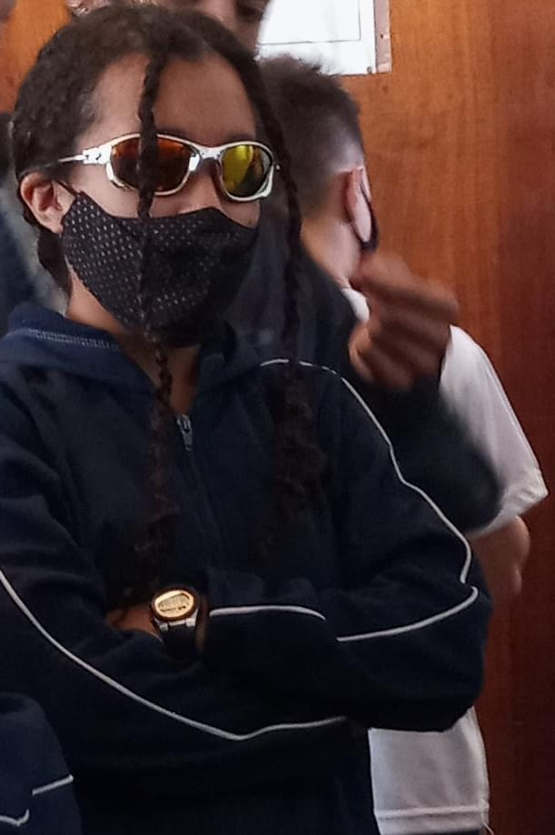
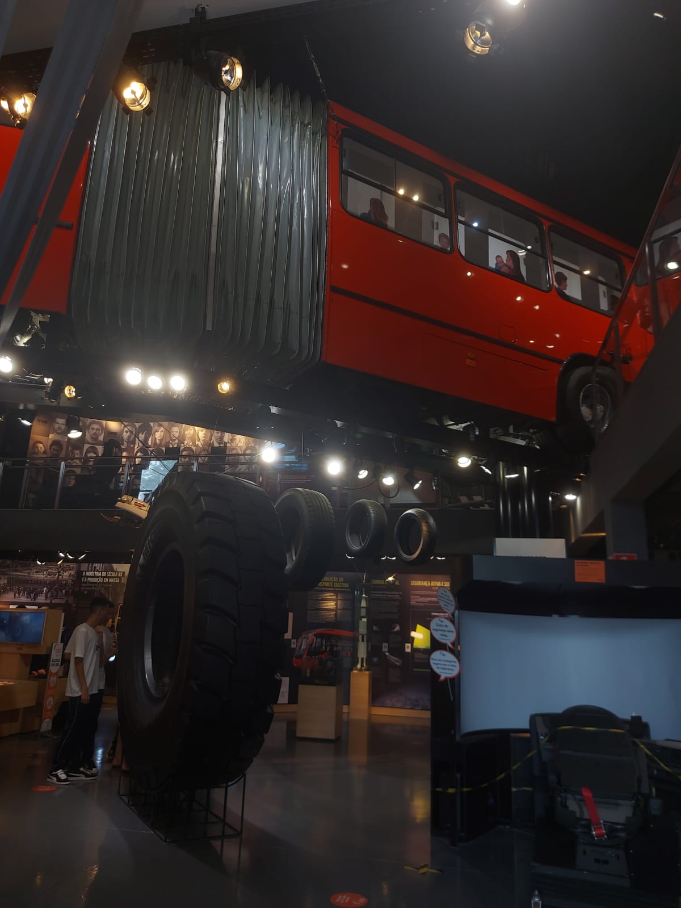

9 ano
Data: 2021
Relato:Isabelle se libertando e mostrando o lado mandrake dela para todos
9 ano
Data: 2021
Relato: O Thomas no seu dia de princesa malandra, quebrando tabus na sociedade em 2021.

2 ano
Data: 2023
Relato:Depois de muito custo, esse foi o dia que conseguimos escapar do colégio por um dia e ir no "museu da volvo".
